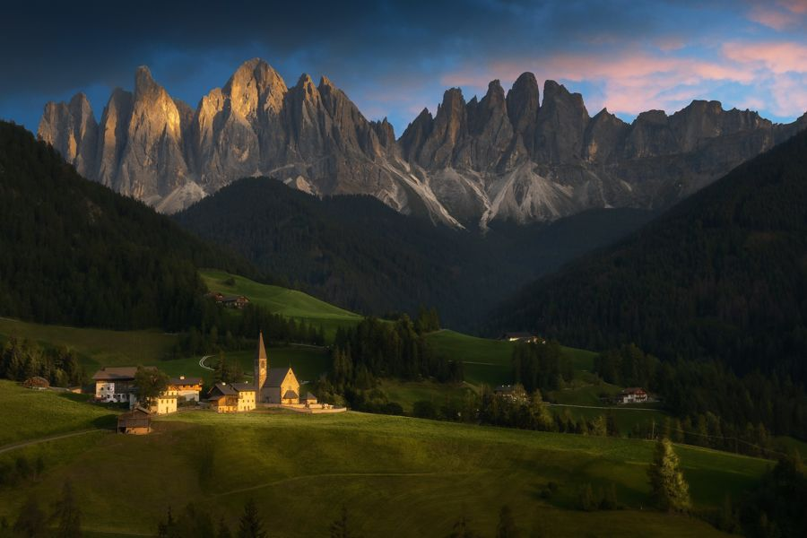

Fabio's pickSanta Maddalena viewpointSigned by the folk
Photo folk · on the spot
Come at first light in October, stand by the wooden fence above the church.
The other tips are for folkBecome folk to read them